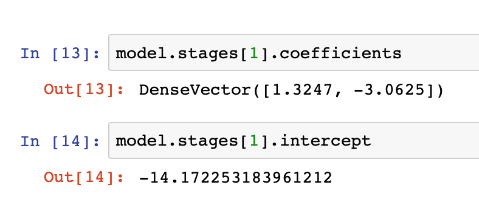

Run the model on the ESP8266 device
Learning Objectives
In this section you will learn how to take the model parameters generated in the previous section and implement a function to run the model on the ESP8266 to provide real-time classification.
Logistic regression
The algorithm at the heart of the model we generated is Logistic Regression, which uses the Logit function (long-odds) then applies the Logistic sigmoid function:
Logit function for 2 predictor values h and t (humidity and temp) is: C + w1*h + w2*t where C is a constant and w1 and w2 are weighting values for the predictors.
The values of C, w1 and w2 are the values from the Jupyter Notebook in the previous section: 
Here the coefficients are w1 and w2 and the intercept is the constant C. Note the order of the weightings was specified by the order of the properties fed into the Vector Assembler:
vectorAssembler = VectorAssembler(inputCols=["humidity","temp"], outputCol="features")
so the first coefficient is the weighting for the humidity property and the second coefficient is the weighting for the temperature property.
The sigmoid function is: f(x) = 1/(1+e^-x)
Given the two functions we can create an implementation in C that can be integrated with our ESP8266 application:
#include <math.h>
#define MODEL_INTERCEPT -14.172253183961212
#define MODEL_TEMP_COEF -3.0625
#define MODEL_HUM_COEF 1.3247
float applyModel(float h, float t) {
// apply logit formula C + w1*h + w2*t
float regression = MODEL_INTERCEPT + MODEL_HUM_COEF * h + MODEL_TEMP_COEF * t;
// return sigmoid logistic function on logit result
return 1/(1 + exp(0.0 - (double)regression));
}
Incorporating real-time classification on the ESP8266
Now we have a function that applies the trained model that can be implemented in C on the ESP8266, we can incorporate the result into our code.
Each time new readings are made we can call the applyModel() function. The output of the function will be a floating point number where numbers nearest 0.0 represent class 0 in our training data and numbers nearest 1.0 represent class 1 in our training scenario. A simple comparison assigning results less than 0.5 to class 0 and results above 0.5 to class 1 is all that is needed to assign a set of readings to a class.
So we can incorporate this into the loop function to set another property on the message sent to the IoT platform:
// Apply the model to the sensor readings
float modelPrediction = applyModel(h, t);
...
status["class"] = modelPrediction < 0.5 ? 0 : 1;
The completed ESP8266 application should now look like:
#include <LittleFS.h>
#include <ESP8266WiFi.h>
#include <time.h>
#include <Adafruit_NeoPixel.h>
#include <DHT.h>
#include <ArduinoJson.h>
#include <PubSubClient.h>
#include <math.h>
// --------------------------------------------------------------------------------------------
// UPDATE CONFIGURATION TO MATCH YOUR ENVIRONMENT
// --------------------------------------------------------------------------------------------
// Watson IoT connection details
#define MQTT_HOST "<orgID>.messaging.internetofthings.ibmcloud.com"
#define MQTT_PORT 8883
#define MQTT_DEVICEID "d:<orgID>:<type>:<id>"
#define MQTT_USER "use-token-auth"
#define MQTT_TOKEN "<token>"
#define MQTT_TOPIC "iot-2/evt/status/fmt/json"
#define MQTT_TOPIC_DISPLAY "iot-2/cmd/display/fmt/json"
#define MQTT_TOPIC_INTERVAL "iot-2/cmd/interval/fmt/json"
#define CA_CERT_FILE "/rootCA_certificate.pem"
#define KEY_FILE "/SecuredDev01_key_nopass.pem"
#define CERT_FILE "/SecuredDev01_crt.pem"
// Add GPIO pins used to connect devices
#define RGB_PIN 5 // GPIO pin the data line of RGB LED is connected to
#define DHT_PIN 4 // GPIO pin the data line of the DHT sensor is connected to
// Specify DHT11 (Blue) or DHT22 (White) sensor
//#define DHTTYPE DHT22
#define DHTTYPE DHT11
#define NEOPIXEL_TYPE NEO_RGB + NEO_KHZ800
// Temperatures to set LED by (assume temp in C)
#define ALARM_COLD 0.0
#define ALARM_HOT 30.0
#define WARN_COLD 10.0
#define WARN_HOT 25.0
//Timezone info
#define TZ_OFFSET -5 //Hours timezone offset to GMT (without daylight saving time)
#define TZ_DST 60 //Minutes timezone offset for Daylight saving
// Add WiFi connection information
char ssid[] = "<SSID>"; // your network SSID (name)
char pass[] = "<PASSWORD>"; // your network password
// Model parameters from part4 - to implement the model on the ESP8266
// Replace these parameters with the model parameters from your Jupyter Notebook
#define MODEL_INTERCEPT -14.172253183961212
#define MODEL_TEMP_COEF -3.0625
#define MODEL_HUM_COEF 1.3247
// --------------------------------------------------------------------------------------------
// SHOULD NOT NEED TO CHANGE ANYTHING BELOW THIS LINE
// --------------------------------------------------------------------------------------------
Adafruit_NeoPixel pixel = Adafruit_NeoPixel(1, RGB_PIN, NEOPIXEL_TYPE);
DHT dht(DHT_PIN, DHTTYPE);
// MQTT objects
void callback(char* topic, byte* payload, unsigned int length);
BearSSL::WiFiClientSecure wifiClient;
PubSubClient mqtt(MQTT_HOST, MQTT_PORT, callback, wifiClient);
BearSSL::X509List *rootCert;
BearSSL::X509List *clientCert;
BearSSL::PrivateKey *clientKey;
// variables to hold data
StaticJsonDocument<100> jsonDoc;
JsonObject payload = jsonDoc.to<JsonObject>();
JsonObject status = payload.createNestedObject("d");
StaticJsonDocument<100> jsonReceiveDoc;
static char msg[50];
float h = 0.0; // humidity
float t = 0.0; // temperature
unsigned char r = 0; // LED RED value
unsigned char g = 0; // LED Green value
unsigned char b = 0; // LED Blue value
int32_t ReportingInterval = 10; // Reporting Interval seconds
float applyModel(float h, float t) {
// apply regression formula w1 + w2x + w3y
float regression = MODEL_INTERCEPT + MODEL_HUM_COEF * h + MODEL_TEMP_COEF * t;
// return sigmoid logistic function on regression result
return 1/(1 + exp(0.0 - (double)regression));
}
void callback(char* topic, byte* payload, unsigned int length) {
// handle message arrived
Serial.print("Message arrived [");
Serial.print(topic);
Serial.print("] : ");
payload[length] = 0; // ensure valid content is zero terminated so can treat as c-string
Serial.println((char *)payload);
DeserializationError err = deserializeJson(jsonReceiveDoc, (char *)payload);
if (err) {
Serial.print(F("deserializeJson() failed with code "));
Serial.println(err.c_str());
} else {
JsonObject cmdData = jsonReceiveDoc.as<JsonObject>();
if (0 == strcmp(topic, MQTT_TOPIC_DISPLAY)) {
//valid message received
r = cmdData["r"].as<unsigned char>(); // this form allows you specify the type of the data you want from the JSON object
g = cmdData["g"];
b = cmdData["b"];
jsonReceiveDoc.clear();
pixel.setPixelColor(0, r, g, b);
pixel.show();
} else if (0 == strcmp(topic, MQTT_TOPIC_INTERVAL)) {
//valid message received
ReportingInterval = cmdData["Interval"].as<int32_t>(); // this form allows you specify the type of the data you want from the JSON object
Serial.print("Reporting Interval has been changed:");
Serial.println(ReportingInterval);
jsonReceiveDoc.clear();
} else {
Serial.println("Unknown command received");
}
}
}
void setup() {
char *ca_cert = nullptr;
char *client_cert = nullptr;
char *client_key = nullptr;
// Start serial console
Serial.begin(115200);
Serial.setTimeout(2000);
while (!Serial) { }
Serial.println();
Serial.println("ESP8266 Sensor Application");
// Start WiFi connection
WiFi.mode(WIFI_STA);
WiFi.begin(ssid, pass);
while (WiFi.status() != WL_CONNECTED) {
delay(500);
Serial.print(".");
}
Serial.println("");
Serial.println("WiFi Connected");
// Start connected devices
dht.begin();
pixel.begin();
// Get cert(s) from file system
LittleFS.begin();
File ca = LittleFS.open(CA_CERT_FILE, "r");
if(!ca) {
Serial.println("Couldn't load CA cert");
} else {
size_t certSize = ca.size();
ca_cert = (char *)malloc(certSize);
if (certSize != ca.readBytes(ca_cert, certSize)) {
Serial.println("Loading CA cert failed");
} else {
Serial.println("Loaded CA cert");
rootCert = new BearSSL::X509List(ca_cert);
wifiClient.setTrustAnchors(rootCert);
}
free(ca_cert);
ca.close();
}
File key = LittleFS.open(KEY_FILE, "r");
if(!key) {
Serial.println("Couldn't load key");
} else {
size_t keySize = key.size();
client_key = (char *)malloc(keySize);
if (keySize != key.readBytes(client_key, keySize)) {
Serial.println("Loading key failed");
} else {
Serial.println("Loaded key");
clientKey = new BearSSL::PrivateKey(client_key);
}
free(client_key);
key.close();
}
File cert = LittleFS.open(CERT_FILE, "r");
if(!cert) {
Serial.println("Couldn't load cert");
} else {
size_t certSize = cert.size();
client_cert = (char *)malloc(certSize);
if (certSize != cert.readBytes(client_cert, certSize)) {
Serial.println("Loading client cert failed");
} else {
Serial.println("Loaded client cert");
clientCert = new BearSSL::X509List(client_cert);
}
free(client_cert);
cert.close();
}
wifiClient.setClientRSACert(clientCert, clientKey);
// Set time from NTP servers
configTime(TZ_OFFSET * 3600, TZ_DST * 60, "1.pool.ntp.org", "0.pool.ntp.org");
Serial.println("\nWaiting for time");
unsigned timeout = 5000;
unsigned start = millis();
while (millis() - start < timeout) {
time_t now = time(nullptr);
if (now > (2018 - 1970) * 365 * 24 * 3600) {
break;
}
delay(100);
}
delay(1000); // Wait for time to fully sync
Serial.println("Time sync'd");
time_t now = time(nullptr);
Serial.println(ctime(&now));
// Connect to MQTT - IBM Watson IoT Platform
while(! mqtt.connected()){
if (mqtt.connect(MQTT_DEVICEID, MQTT_USER, MQTT_TOKEN)) { // Token Authentication
// if (mqtt.connect(MQTT_DEVICEID)) { // No Token Authentication
Serial.println("MQTT Connected");
mqtt.subscribe(MQTT_TOPIC_DISPLAY);
mqtt.subscribe(MQTT_TOPIC_INTERVAL);
} else {
Serial.print("last SSL Error = ");
Serial.print(wifiClient.getLastSSLError(msg, 50));
Serial.print(" : ");
Serial.println(msg);
Serial.println("MQTT Failed to connect! ... retrying");
delay(500);
}
}
}
void loop() {
mqtt.loop();
while (!mqtt.connected()) {
Serial.print("Attempting MQTT connection...");
// Attempt to connect
if (mqtt.connect(MQTT_DEVICEID, MQTT_USER, MQTT_TOKEN)) { // Token Authentication
// if (mqtt.connect(MQTT_DEVICEID)) { // No Token Authentication
Serial.println("MQTT Connected");
mqtt.subscribe(MQTT_TOPIC_DISPLAY);
mqtt.subscribe(MQTT_TOPIC_INTERVAL);
mqtt.loop();
} else {
Serial.print("last SSL Error = ");
Serial.print(wifiClient.getLastSSLError(msg, 50));
Serial.print(" : ");
Serial.println(msg);
Serial.println("MQTT Failed to connect!");
delay(5000);
}
}
h = dht.readHumidity();
t = dht.readTemperature(); // uncomment this line for Celsius
// t = dht.readTemperature(true); // uncomment this line for Fahrenheit
// Check if any reads failed and exit early (to try again).
if (isnan(h) || isnan(t)) {
Serial.println("Failed to read from DHT sensor!");
} else {
/* Control of the LED is now handles by the incoming command
// Set RGB LED Colour based on temp
//b = (t < ALARM_COLD) ? 255 : ((t < WARN_COLD) ? 150 : 0);
//r = (t >= ALARM_HOT) ? 255 : ((t > WARN_HOT) ? 150 : 0);
//g = (t > ALARM_COLD) ? ((t <= WARN_HOT) ? 255 : ((t < ALARM_HOT) ? 150 : 0)) : 0;
//pixel.setPixelColor(0, r, g, b);
//pixel.show();
*/
// Apply the model to the sensor readings
float modelPrediction = applyModel(h, t);
// Print Message to console in JSON format
status["temp"] = t;
status["humidity"] = h;
Serial.print("Model output = ");
Serial.println(modelPrediction);
status["class"] = modelPrediction < 0.5 ? 0 : 1;
serializeJson(jsonDoc, msg, 50);
Serial.println(msg);
if (!mqtt.publish(MQTT_TOPIC, msg)) {
Serial.println("MQTT Publish failed");
}
}
Serial.print("ReportingInterval :");
Serial.print(ReportingInterval);
Serial.println();
// Pause - but keep polling MQTT for incoming messages
for (int32_t i = 0; i < ReportingInterval; i++) {
mqtt.loop();
delay(1000);
}
}